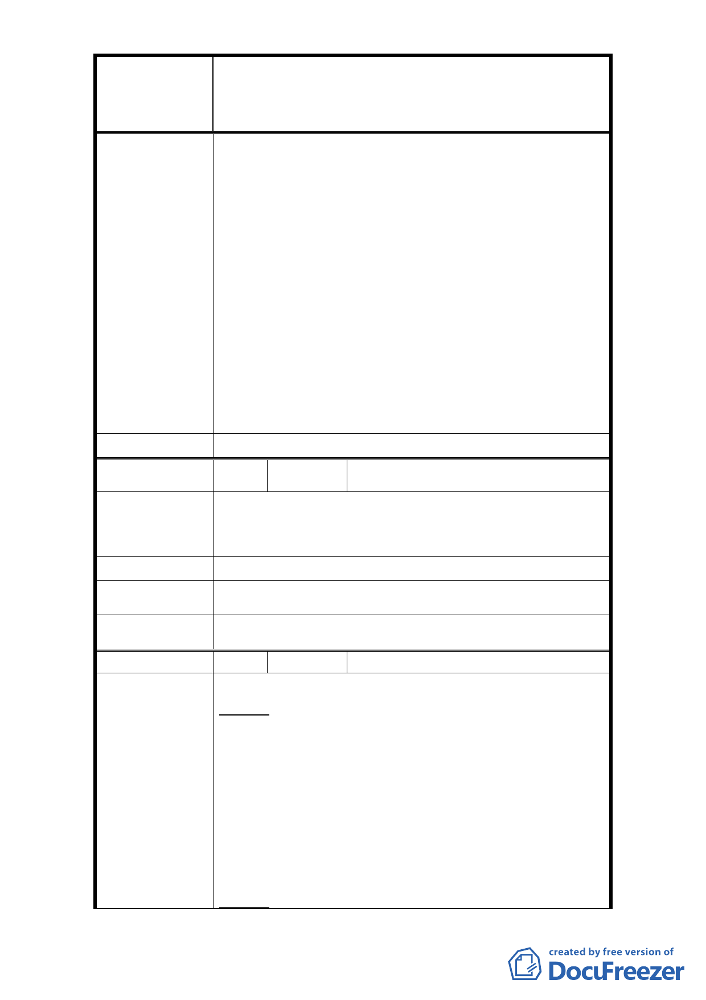

修訂臺北市大安區青田街保存區聚落風貌保存專用區細部計
案
名
畫、變更部分第三種住宅區、第三種商業區(特)為第三種住宅區
(特)(日式宿舍)及第三種商業區(特)(日式宿舍)暨劃定週邊地
區都市設計管制細部計畫案
95、 96 年公告 4 處古蹟、7 處歷史建築。指定理
由為為殖民時期昭和町舊址之高級文人住宅區，是
臺北市歷史的重要組成部分，值得保存。又上述建
築之保存良好、格局完整，原物保存較多故經委員
會建議予以保存。
2. 日式宿舍納入細部計畫內則是在本市都市計畫委
員會於 96 年 2 月 13 日第 565 次委員會議中決議：
「為形塑整體街區保存與維護土地權利關係人權
益，本計畫案管制區內除以指定古蹟、已登錄歷史
建築外，增加日式 1 類可適用內政部頒訂都市計畫
容積移轉辦法」而將不具文資價值身分之日式宿舍
納入都市計畫管制範圍加以管制。
3. 有關本區內規劃市場之可能性部分，已請本府市場
處評估答復。
委 員 會 決 議 依市府回覆意見辦理。
編
號 33
陳情人 臺灣銀行不動產管理部
金華段2小段138地號土地原登記為中央信託局，該局
陳 情 理 由 已於96年7月1日與本行合併，存續銀行為本行，該筆
土地亦變更為本行所有，爰請惠予更正。
建議辦法
市 府 回 覆 意 見 將依所提意見修正。
委 員 會 決 議 依市府回覆意見辦理。
編
號 34
陳情人 李文鐸、柯惠敏、周白玉、林泉盛
◎陳情理由
主旨：
台北市都市計畫委員會實施【台北市大安區青田街保
存區聚落風貌保存專用區細部計畫、變更部分第三種
住宅區、第三種商業區（特）為第三種住宅區（特）
陳 情 理 由 （日式宿合）及第三種商業區（特）（日式宿合）暨劃
定週邊地區都市設計管制細部計畫案】 時，沒有完整
配套措施，致使台北市金華段二小段 267 地號住戶們
蒙受極大的不平等待遇。台北市金華段二小段 267 地
號住戶們，請求公平待遇居住權益。
說明：
- 40 -